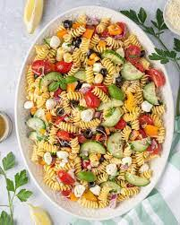

Pasta Salad

Today's recipe is a picnic-perfect pasta salad! Every cookout needs a great pasta salad, and this is the one that I'll be making all summer long. It comes together in no time, it's full of fresh ingredients, and it packs a flavorful punch!
Ingredients
3 cups uncooked fusilli pasta
2 heaping cups halved cherry tomatoes
1½ cups cooked chickpeas, drained and rinsed
1 cup Persian cucumbers, sliced into thin half moons
1 cup crumbled feta cheese
Dressing
¼ cup extra-virgin olive oil, more for drizzling
3 tablespoons lemon juice
1 teaspoon herbes de Provence, or dried Italian seasoning
¼ teaspoon red pepper flakes
Steps
Bring a large pot of salted water to a boil. Prepare the pasta according to the package directions, or until slightly past al dente.
Meanwhile, make the dressing. In a small bowl, whisk together the olive oil, lemon juice, mustard, garlic, herbes de Provence, red pepper flakes, and salt.
Drain the pasta, toss it with a little olive oil and let it cool to room temp. Transfer to a large bowl with the tomatoes, chickpeas, argugula, cucumbers, feta cheese, basil, parsley, mint, and pine nuts. Pour the dressing and toss to coat. Season to taste with more lemon, salt, pepper, and/or a drizzle of olive oil, if desired, and serve.